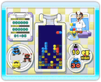
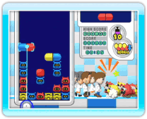

7 |
Welcome! |
 |
Dr. Mario & Germ Buster contains two separate games: Dr. Mario and Germ Buster. Both have the same basic objectives and rules but use different controls.

● What is Dr. Mario? The object of the game is to use vitamin capsules to eliminate viruses. If you line up four or more items of the same colour vertically or horizontally, the entire line will disappear. The blocks can be either capsules or viruses, as long as there are four or more. Hold the Wii Remote sideways and use the buttons to play Dr. Mario. 
● What is Germ Buster? The object of this game is the same as that of Dr. Mario: eliminate the viruses by using medicine capsules. In this game, you hold the Wii Remote upright and use the Pointer to play. Up to four people can play together. ● Battle Mode In Dr. Mario, you can battle against a friend locally or use Nintendo Wi-Fi Connection to compete with people all over the world. You can even play with people who have not purchased the game by using the Dr. Mario Demo - a demo version of the game that you can send to your Wii Friends through WiiConnect24. |
 |
 |
 |